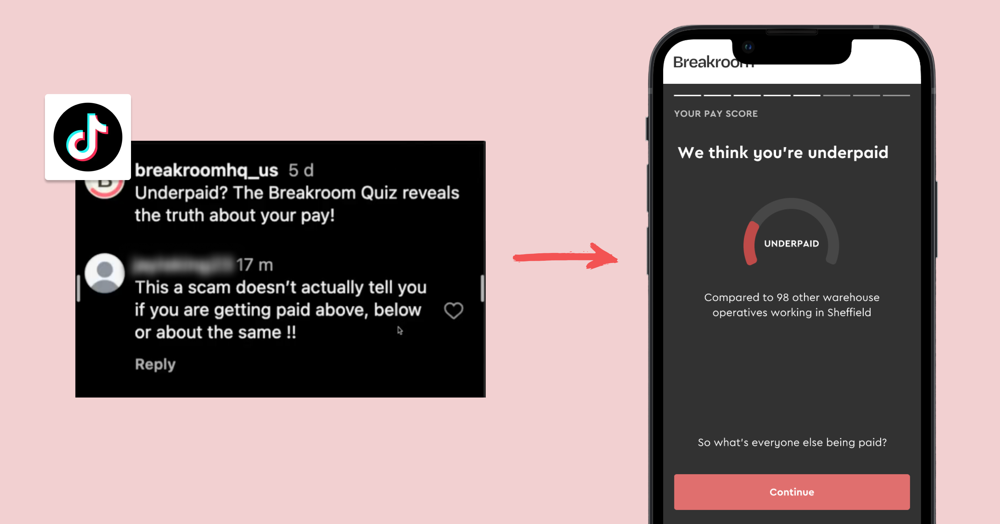
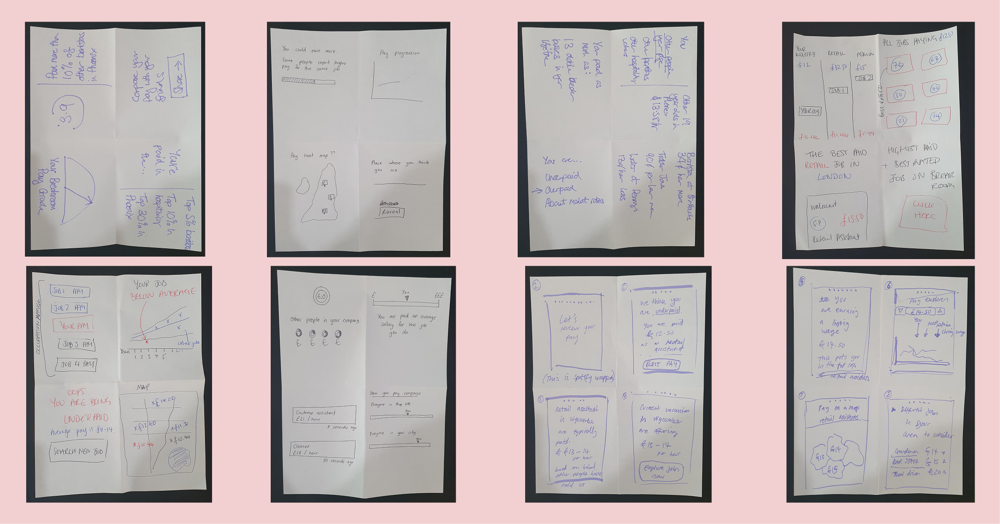
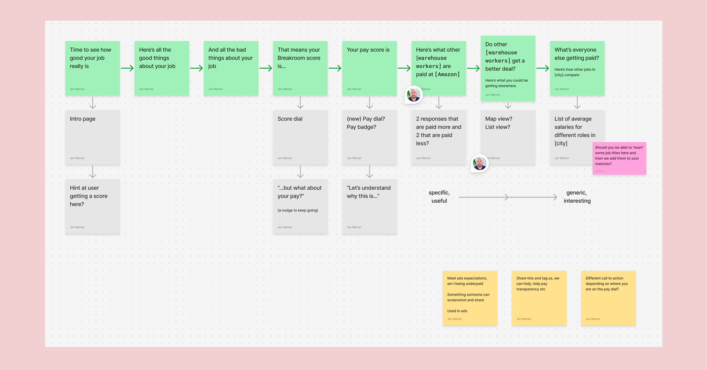
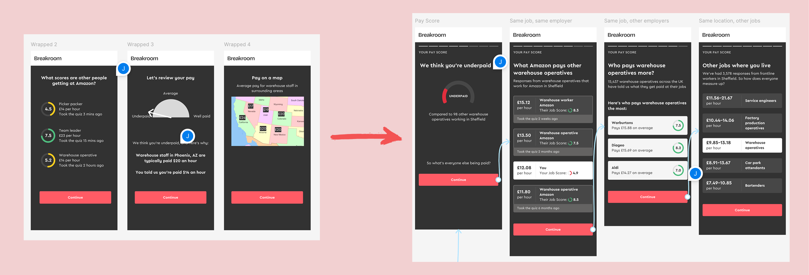

Brief
Why this project existed
TikTok was one of Breakroom's most important acquisition channels — and content was performing. But it was creating a gap between what the product promised and what it delivered. Users were commenting negatively on ads and emailing the helpdesk about missing a feature to understand whether they were paid fairly.
How we measured success
- After taking the quiz, users should be able to clearly answer "am I well paid or not?" — confirmed through UserBrain research.
- Helpdesk tickets and ad comments asking for this feature should go to 0.
- Nice-to-have: hearing testers say they'd recommend Breakroom specifically for its pay comparison.
My role
Lead designer from start to finish. I facilitated the kick-off workshop, owned all design work, ran the UserBrain research, and collaborated with the marketing team to test the prototype in live ads. The wider team included our PM, CTO, Head of Design, and a software engineer.
The problem
Breakroom is a job platform for frontline workers — people in retail, hospitality, logistics, and care. Unlike traditional job boards, it's built around honest, worker-first information: real pay data, real workplace ratings, and a genuine opinion on what a good job looks like.
Breakroom's TikTok marketing was built on a simple, compelling hook: "find out if you're underpaid." The ads were working and driving traffic. But the product didn't deliver on that promise yet. Users were noticing. They were commenting negatively on ads, and a small number were emailing the helpdesk asking where the feature was.
This wasn't a peripheral marketing channel. TikTok was central to how Breakroom acquired users, with an internal target of keeping cost-per-candidate below £1 — already an ambitious benchmark. Cheap social acquisition was a genuine competitive advantage, but it only held if people trusted what they found when they landed in the product. Acquiring someone cheaply through TikTok and then immediately losing their trust was the worst possible outcome.
The results tour — the sequence of screens a worker sees after completing the Breakroom Quiz — ended with your rating, your good findings, and your bad findings. There was no moment that gave a worker a direct, personal read on whether their pay was actually good or not.
How I approached it
I kicked the project off with an in-person workshop, bringing together our PM, CTO, Head of Design, and a software engineer. I led the group through a Crazy 8s exercise to surface a broad range of ideas and build shared direction before any design work started.
| What I prepared |
|---|
| A brief framing the problem and the TikTok context |
| A Crazy 8s exercise |
| A structured group discussion to identify the most viable direction |
| What came out of it |
|---|
| A clear direction: append a pay-specific screen sequence to the end of the results tour |
| The issue of demographic data came up again, to show pay breakdowns by gender, age, race? Compelling, but out-of-scope |

The sketches that the team created
One idea that surfaced was showing pay breakdowns by demographic — age, gender, race — letting workers compare themselves to people like them. It's a compelling direction, but out of scope here: Breakroom doesn't collect demographic data in the quiz, and adding it has real implications for completion rates and user trust. Worth revisiting as a separate project.
The design
From the workshop sketches, I worked through several ways to frame pay data in a way that felt personal and trustworthy. My initial explorations took a 'Spotify Wrapped' approach — a sequence of screens each surfacing a different comparison: how your pay stacks up against others in the same role at your employer, what other employers pay for your job title, and what other frontline jobs nearby pay. The goal was to put all of them in front of users and find out what actually resonated.

A Figjam showing the mapping out of the wrapped idea, what order should all the different comparisons come in, and what's the overall story we're telling a user

Showing the journey from lower fidelity ideas to the high fidelity prototype screens
Building to this level of fidelity also opened up useful back-end conversations. The prototype made the pay thresholds concept concrete enough to prompt real discussions with engineering about how to score pay — and how that would affect employer ratings on Breakroom.
Testing with users
The UserBrain sessions were structured to mirror the real user journey — testing the full sequence rather than the prototype in isolation. This mattered because success depended on whether the product felt like it delivered on the promise the ad had set.
| Step | Task (Small sample, 5 users) |
|---|---|
| 1 | "To start, we'd like you to watch one of our adverts. What information do you think the quiz will tell you about your pay? What do you expect to see?" |
| 2 | Users take the Breakroom Quiz with existing results tour. Ask "How difficult or easy was it to tell if you are well paid or not?" |
| 3 | Users see prototype of the proposed design for end of quiz. Ask "How difficult or easy was it to tell if you are well paid or not?" |
| 4 | "Think of someone in your life that works in a frontline job or is paid by the hour. Who are they? Would you recommend Breakroom to them? If so, how would you describe it to them?" Do users mention pay comparison as a compelling reason to use Breakroom? |
Testing in live ads
In parallel, I worked with the marketing team to take the prototype directly into live ad creative. They screen-recorded the clickable Figma prototype and ran it on TikTok and Instagram — testing from both ends at once: does the prototype resonate in a brand new ad, and does it actually answer the expectation set by the existing one? I also built an alternate version with dollar values for their US-facing ads.
Outcome
The pay tour shipped as the closing sequence of the Breakroom Quiz results tour — the moment where a worker gets a direct, personal read on their pay situation, rather than having to dig through abstract pay data elsewhere on the site.
The UserBrain sessions confirmed the design was doing its job. Users understood what the data was telling them and what it meant personally.
It's great comparison. It's very easy to understand the data that's being shown to me. It was very easy to understand if I'm well paid or not.
Sherida
This is a good page that shows information, I'm underpaid because it says I get paid twelve pounds, but others are paid fifteen.
Eniola
Running the prototype in live ads was a success too. Average cost-per-acquisition dropped from £0.88 to £0.62 — a 30% reduction — after adding the prototype screen recording. The clip stayed in multiple ads going forward. Anecdotally, TikTok comments and helpdesk tickets about the missing pay feature dropped off.
The one thing that didn't come through strongly in UserBrain was users citing pay comparison as a specific reason to recommend Breakroom — but that was a nice-to-have and didn't affect the core success of the feature.
What I'd do differently
The demographic pay question from the workshop is one I'd love to see revisited. Surfacing that an employer pays women significantly less than men, for example, would be a genuinely powerful finding. But collecting demographic data has real implications for completion rates and trust — it's a bigger conversation than this project.
If I ran this again, I'd stay closer to how the marketing team were measuring ad performance after handoff. I moved on to a new project once the prototype was in their hands, but it was a missed opportunity to learn more about their marketing metrics and see how design decisions can influence them — exactly the kind of cross-functional overlap that makes a designer more effective over time.